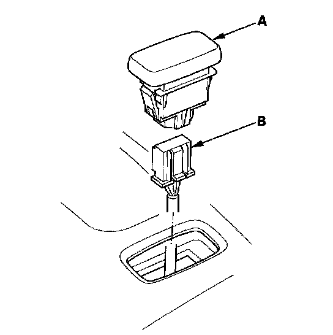
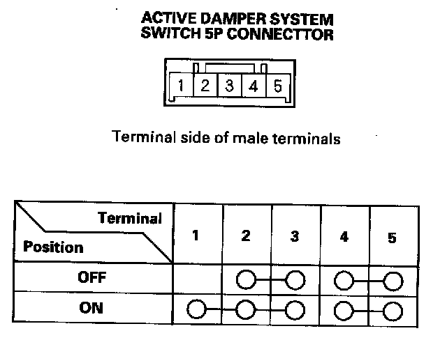

Suspension Mode Switch: Testing and Inspection
Active Damper System Switch Test1. Turn the ignition switch OFF.
2. Remove the center console.
3. Push out the active damper system switch (A) from the back of the center console.

4. Disconnect the active damper system switch connector (B).
5. Check for continuity between the active damper system switch terminals in each switch position according to the table.

6. If the continuity is not as specified, replace the illumination bulb or the switch.